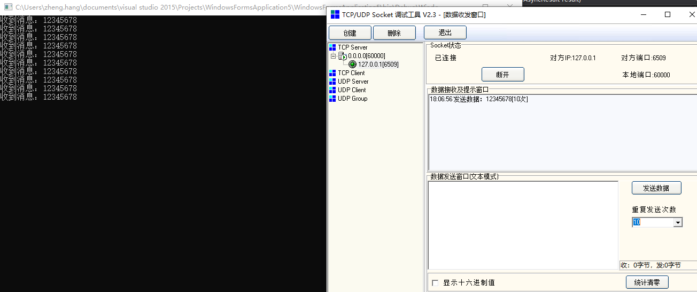
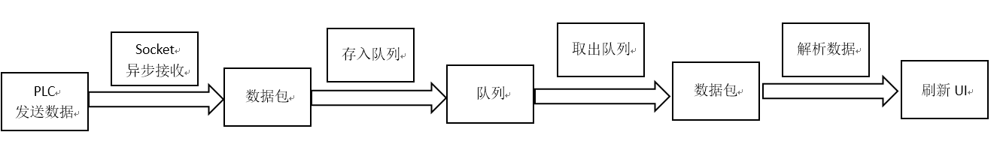
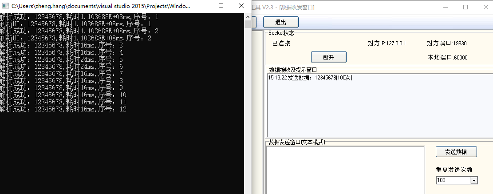
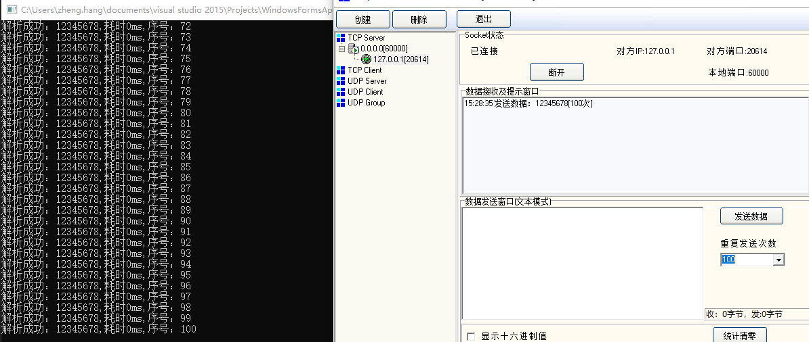
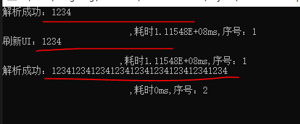
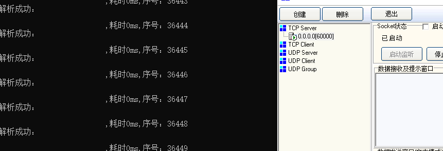

现有项目是利用C#的socket与PLC进行实时通讯，PLC有两种通讯模式——常规采集&高频采集。
其中常规采集大概在10ms左右发送一次数据，高频采集大概在2ms左右发送一次数据。
现有代码框架：在与PLC进行连接时，通过建立委托并创建线程的方式，来循环读取数据
//创建委托
public delegate void PLC_HD_Receive(byte[] recv_data);
public PLC_HD_Receive PLC_Recv_Delegate_HD;
//给委托绑定方法
PLC_Recv_Delegate_HD = new PLC_HD_Receive(PLC_Receive_Callback_HD);
//创建线程
PLC_Thread_HD = new Thread(new ThreadStart(PLC_ReadThread_HD));
PLC_Thread_HD.IsBackground = true;
PLC_Thread_HD.Start();
//在线程内调用委托
this.BeginInvoke(this.PLC_Recv_Delegate_HD, new Object[] { recv_buffer_hd });只要连接PLC成功后，会一直在后台读取PLC发送来的数据，并解析数据
现有问题：实时性和数据完整性不够，有些操作会导致socket断掉连接。
计划：改写现有代码框架，加深对通讯的理解，和对实时数据流的处理。 2019-5-22
**************************************************************************************************************************************************
思路：原有框架读取数据使用的是同步通信，出错时反馈TimeOut错误，先准备改成异步通信
1 SocketError socket_error;
2
3 while (total_length < recv_buffer_len_hd)
4 {
5 //同步接收数据
6 ret_length = m_socket_hd.Receive(recv_buffer_hd, total_length, data_left, SocketFlags.None, out socket_error);
7 if (socket_error == SocketError.TimedOut || socket_error == SocketError.Shutdown || socket_error == SocketError.ConnectionAborted || ret_length == 0)
8 {
9 // 网络不正常，委托退出接收线程
10 thread_id = 1;
11 this.Invoke(this.PLC_ExitThread_Delegate_HD, new Object[] { thread_id });
12 return;
13 }
14 total_length += ret_length;
15 data_left -= ret_length;
16 } 控制台异步输出数据
首先搭建一个简单的winform窗口demo，实现控制台异步输出数据
此处参考链接：https://blog.csdn.net/smartsmile2012/article/details/71172450 异步接收
但网上搜到的大部分都是服务器接收，项目上的应用是客户端接收，做了一点修改
搭建的过程中遇到了winform无法直接控制台输出，需要引用AllocConsole()和FreeConsole()
此处参考链接：https://blog.csdn.net/b510030/article/details/52621312 WinForm添加Console
在反复点击按钮的过程中发现，AllocConsole()最好在窗口构造函数中使用，否则多次调用AllocConsole()会导致Console.Readkey()报错
1 public partial class Form1 : Form
2 {
3 //winform调用console窗口
4 [DllImport("Kernel32.dll")]
5 public static extern Boolean AllocConsole();
6
7 [DllImport("Kernel32.dll")]
8 public static extern Boolean FreeConsole();
9 //socket模块
10 IPAddress ip;
11 Socket m_sokcet;
12 IPEndPoint local_endpoint;
13 byte[] buffer;
19 public Form1()
20 {
21 buffer = new byte[8];
22 InitializeComponent();
25 AllocConsole();
26 }
27
28 private void button1_Click(object sender, EventArgs e)
29 {
30 ip = IPAddress.Parse("127.0.0.1");
31 local_endpoint = new IPEndPoint(ip, 60000);
32 m_sokcet = new Socket(AddressFamily.InterNetwork, SocketType.Stream, ProtocolType.Tcp);
33 m_sokcet.Connect(local_endpoint);
34 m_sokcet.BeginReceive(buffer, 0, buffer.Length, SocketFlags.None, new AsyncCallback(ReceiveCallback), m_sokcet);
35 Console.ReadKey();
36 }
71 void ReceiveCallback(IAsyncResult result)
72 {
73 Socket m_sokcet = (Socket)result.AsyncState;
74 m_sokcet.EndReceive(result);
75 result.AsyncWaitHandle.Close();
91 Console.WriteLine("收到消息：{0}", Encoding.ASCII.GetString(buffer));
94 //清空数据，重新开始异步接收
95 buffer = new byte[buffer.Length];
96 m_sokcet.BeginReceive(buffer, 0, buffer.Length, SocketFlags.None, new AsyncCallback(ReceiveCallback), m_sokcet);
97 }
98 }服务端利用socketTool调试工具，发送数据后看控制台窗口的刷新情况，测试结果如下：

测试结果OK
**************************************************************************************************************************************************
流式数据框架构思
此处参考链接：https://www.csdn.net/article/2014-06-12/2820196-Storm 实时计算
二． 实时计算的相关技术
主要分为三个阶段（大多是日志流）:
数据的产生与收集阶段、传输与分析处理阶段、存储对对外提供服务阶段
链接内说的是大数据和流式处理框架Storm，项目上还远远达不到大数据级别，所以只是参考一下思路。

数据的产生：PLC，数据的接受：Socket，数据的存储：队列，数据的分析处理：解析数据，数据的对外服务：刷新UI
框架思路有了，接下来就是具体实现
**************************************************************************************************************************************************
生产者-消费者模式和队列
此处参考链接：https://www.cnblogs.com/samgk/p/4772806.html 队列
1 //队列模块
2 readonly static object _locker = new object();
3 Queue<byte[]> _tasks = new Queue<byte[]>();
4 EventWaitHandle _wh = new AutoResetEvent(false);
5 Thread _worker;
6
7 //窗口初始化时开始消费者线程
8 public Form1()
9 {
10 buffer = new byte[8];
11 InitializeComponent();
12 _worker = new Thread(Work);
13 _worker.Start();
14 AllocConsole();
15 }
16
17 //加了锁和信号量
18 void Work()
19 {
20 while (true)
21 {
22 byte[] work = null;
23 lock (_locker)
24 {
25 if (_tasks.Count > 0)
26 {
27 work = _tasks.Dequeue(); // 有任务时，出列任务
28
29 if (work == null) // 退出机制：当遇见一个null任务时，代表任务结束
30 return;
31 }
32 }
33
34 if (work != null)
35 SaveData(work); // 任务不为null时，处理并保存数据
36 else
37 _wh.WaitOne(); // 没有任务了，等待信号
38 }
39 }
40
41 //在异步接收的方法中把控制台输出修改为加入队列
42 void EnqueueTask(byte[] task)
43 {
44 lock (_locker)
45 _tasks.Enqueue(task); // 向队列中插入任务
46
47 _wh.Set(); // 给工作线程发信号
48 }1 //TODO 将收到的数据放入队列
2 EnqueueTask(buffer);
3 Thread.Sleep(10);
4 //Console.WriteLine("收到消息：{0}", Encoding.ASCII.GetString(buffer));
5 //1 void SaveData(byte[] buffer)
2 {
3 //从队列中取出数据
4 Console.WriteLine("收到消息：{0}", Encoding.ASCII.GetString(buffer));
5 }
这样就把数据先存入队列，再取出数据，通过控制台输出数据，实现了生产者-消费者模式和队列存储数据 2019-5-23
**************************************************************************************************************************************************
解析数据&刷新UI
项目真正的业务需求是解析数据和刷新UI，所以我们需要把SaveData方法改造一下
PLC会源源不断的输出数据，我们需要在接收到数据后对数据进行处理和刷新UI，不可能对每一个数据都进行处理
而且项目不是大数据级别的，不使用数据库存放数据，纯粹的实时处理，我们需要定义一下处理数据的采集时间和UI的刷新时间
原有框架的常规采集是16ms，高频采集是2ms，所以在测试阶段定义10ms采集一次，UI刷新500ms一次
逻辑是在最后解析&刷新时间记录时间戳，和SaveData当前执行时间戳比较，大于10ms则解析，大于500ms则刷新
1 int count_UI = 0;
2 int count_Data = 0;
3 float time_UI = 0F;
4 float time_Data = 0F;
5 float time_over_UI = 0F;
6 float time_over_Data = 0F;
7 /// <summary>处理保存</summary>
8 bool SaveData(byte[] buffer)
9 {
11 //从队列中取出数据，解析并刷新UI
13 //解析数据
14 time_Data = Environment.TickCount - time_over_Data;
15 time_UI = Environment.TickCount - time_over_UI;
16 //if (time_Data > 10)//解析数据——10ms一次
17 //{
18 //解析数据函数
19 count_Data++;
23 Console.WriteLine("解析成功：{0},耗时{1}ms,序号：{2}", Encoding.ASCII.GetString(buffer), time_Data.ToString(), count_Data.ToString());
24 time_over_Data = Environment.TickCount;
25 //}
26
27 //刷新UI——500ms一次
28 if (time_UI > 500)
29 {
30 //刷新UI函数
31 count_UI++;
33 Console.WriteLine("刷新UI：{0},耗时{1}ms,序号：{2}", Encoding.ASCII.GetString(buffer), time_UI.ToString(), count_UI.ToString());
34 time_over_UI = Environment.TickCount;
35 }
36 Thread.Sleep(200);// 模拟数据保存
37 return true;
38 }
使用SockeTool发送数据100次，会看到数据被过滤到了一部分

测试到这里我对时间片有一点疑惑，查阅了一些资料和做了一些实际测试
此处参考链接：https://zhidao.baidu.com/question/1051646628145878899.html 时间片
socket处理数据流的速度非常快，如果不加10ms的过滤则每一条数据都会显示在控制台页面，如果加了10ms的过滤则只显示一部分，至于为什么大部分情况下是16ms，和线程调度有关

我们现在把解析数据的函数和UI调用的函数放在指定的地方就可以实测了。
**************************************************************************************************************************************************
socket粘包&服务端断开连接异常&异步接收检测socket通断
1、粘包——在测试过程中发现，如果buffer的大小与每次发送的数据不一致，会发生粘包现象。

项目上PLC发送的数据固定为4096字节，所以和服务端保持一致即可。
2、服务端连接断开——测试的另一个问题是如果服务端断开连接，客户端无法有效监测，回调函数会一直执行。

3、监测通断——网上查了很多资料，利用select方法和poll方法的，试了一下没有效果，最后采用flag的方式成功在连接异常后终止回调函数
EndReceive方法会反馈当前获取到的字节数，否则没有数据则为0，如果重复接收20次，每次延时100ms都没有为0，则判断为连接已断。
项目是和PLC连接，和其他互联网应用有一定的差异。
1 int flag_connect = 0;
2 void ReceiveCallback(IAsyncResult result)
3 {
11 Socket m_sokcet = (Socket)result.AsyncState;
12 int a = m_sokcet.EndReceive(result);
13 result.AsyncWaitHandle.Close();
14 if (a == 0)
15 {
16 if (flag_connect == 20)
17 {
18 flag_connect = 0;
19 return;
20 }
21 flag_connect++;
22 Thread.Sleep(100);
23 }
24 else
25 {
27 EnqueueTask(buffer);32 }
33 //清空数据，重新开始异步接收
34 buffer = new byte[buffer.Length];
35 m_sokcet.BeginReceive(buffer, 0, buffer.Length, SocketFlags.None, new AsyncCallback(ReceiveCallback), m_sokcet);
36 }
**************************************************************************************************************************************************
解析数据连接PLC实测
上面的测试都是笔记本电脑上利用socketTool测试的，现在开始连接PLC做真实的数据解析测试
1、测试遇到的问题是，如何断开解析数据线程和异步接收回调函数
一开始直接使用的是Abort方法，但是效果不好，没有办法再次连接
查询相关资料后，使用flag的方式来退出线程，使用信号量的方式来结束回调函数
另外考虑到PLC是无限的数据流，对队列的最大数量做了一个限制，如果超过1000个则停止接收
此处参考链接：https://blog.csdn.net/pc0de/article/details/52841458 Abort异常
此处参考链接：https://blog.csdn.net/shizhibuyi1234/article/details/78202647 结束线程
还有两个线程相关的，Mark一下日后学习
https://www.cnblogs.com/doforfuture/p/6293926.html 线程池相关
https://www.cnblogs.com/wjcnet/p/6955756.html Task
2、连接断开过程中的，队列内的数据处理。经过测试，最后还是采用信号量的方式
在队列达到最大数量1000时，异步接收回调函数等待。
在队列为空时，解析数据线程给异步接收回调函数发信号。
另外，实测Queue为空时，调用Dequeue会报错队列为空。
完整代码：
1 public partial class Form1 : Form
2 {
3 //winform调用console窗口
4 [DllImport("Kernel32.dll")]
5 public static extern Boolean AllocConsole();
6
7 [DllImport("Kernel32.dll")]
8 public static extern Boolean FreeConsole();
9 //socket模块
10 IPAddress ip;
11 Socket m_sokcet;
12 IPEndPoint local_endpoint;
13 byte[] buffer;
14 //队列模块
15 readonly static object _locker = new object();
16 Queue<byte[]> _tasks = new Queue<byte[]>();
17 EventWaitHandle _wh;
18 EventWaitHandle _recieve_call;
19 Thread _worker;
20 public Form1()
21 {
22 buffer = new byte[256];
23 InitializeComponent();
24 AllocConsole();
25 }
26
27 private void button1_Click(object sender, EventArgs e)
28 {
29 connect_status = true;
30 if (_wh == null)//队列信号量
31 _wh = new AutoResetEvent(false);
32 if (_recieve_call == null)//队列满或空信号量
33 _recieve_call = new AutoResetEvent(false);
34 _worker = new Thread(Work);
35 _worker.Start();
36 if (m_sokcet == null)
37 {
38 ip = IPAddress.Parse("169.254.11.22");//TODO IP修改
39 local_endpoint = new IPEndPoint(ip, 2001);//TODO 端口修改
40 m_sokcet = new Socket(AddressFamily.InterNetwork, SocketType.Stream, ProtocolType.Tcp);
41 m_sokcet.Connect(local_endpoint);
42 }
43 m_sokcet.BeginReceive(buffer, 0, buffer.Length, SocketFlags.None, new AsyncCallback(ReceiveCallback), m_sokcet);
44 //Console.ReadKey();
45 }
46
47 bool connect_status = false;
48 int flag_connect = 0;
49 void ReceiveCallback(IAsyncResult result)
50 {
51 if (_tasks.Count > 10000)
52 {
53 //TODO 区分当前连接状态，执行wait还是return
54 _recieve_call.WaitOne();
55 //return;
56 }
57
58 Socket m_sokcet = (Socket)result.AsyncState;
59 int a = m_sokcet.EndReceive(result);
60 result.AsyncWaitHandle.Close();
61 if (a == 0)//判断是否与服务端断开连接
62 {
63 if (flag_connect == 20)
64 {
65 flag_connect = 0;
66 return;
67 }
68 flag_connect++;
69 Thread.Sleep(100);
70 }
71 else
72 {
73 //TODO 将收到的数据放入队列
74 EnqueueTask(buffer);
75 //Thread.Sleep(1);
76 //Delay(1);
77 //Console.WriteLine("收到消息：{0}", Encoding.ASCII.GetString(buffer));
78 //
79 }
80 //清空数据，重新开始异步接收
81 buffer = new byte[buffer.Length];
82 m_sokcet.BeginReceive(buffer, 0, buffer.Length, SocketFlags.None, new AsyncCallback(ReceiveCallback), m_sokcet);
83 }
84
85 void Work()
86 {
87 bool result;
88 while (connect_status)
89 {
90 byte[] work = null;
91 lock (_locker)
92 {
93 if (_tasks.Count > 0)
94 {
95 work = _tasks.Dequeue(); // 有任务时，出列任务
96 }
97 else
98 {
99 _recieve_call.Set();
100 //return;
101 }
102 }
103
104 if (work != null)
105 result = SaveData(work); // 任务不为null时，处理并保存数据
106 else
107 _wh.WaitOne(); // 没有任务了，等待信号
108 }
109 }
110
111 /// <summary>插入任务</summary>
112 void EnqueueTask(byte[] task)
113 {
114 lock (_locker)
115 _tasks.Enqueue(task); // 向队列中插入任务
116
117 _wh.Set(); // 给工作线程发信号
118 }
119
120 int count_UI = 0;
121 int count_Data = 0;
122 float time_UI = 0F;
123 float time_Data = 0F;
124 float time_over_UI = 0F;
125 float time_over_Data = 0F;
126 /// <summary>处理保存</summary>
127 bool SaveData(byte[] buffer)
128 {
129
130 //TODO 从队列中取出数据，解析并刷新UI
131
132 //解析数据——全部解析并保存
133 time_Data = Environment.TickCount - time_over_Data;
134 time_UI = Environment.TickCount - time_over_UI;
135 //if (time_Data > 10)
136 //{
137 //解析数据函数
138 count_Data++;
139 bool result = PLC_Receive_Callback_HD(buffer);
140 //Console.WriteLine(count_Data.ToString() + "," + _tasks.Count.ToString() + "," + result.ToString());
141 //Thread.Sleep(1);
142 Console.WriteLine("解析成功：{0},耗时{1}ms,序号：{2}", Encoding.ASCII.GetString(buffer), time_Data.ToString(), count_Data.ToString());
143 time_over_Data = Environment.TickCount;
144 //}
145
146 //刷新UI——500ms刷新一次
147 if (time_UI > 500)
148 {
149 //刷新UI函数
150 count_UI++;
151 //Console.WriteLine(count_UI.ToString() + "," + _tasks.Count.ToString() + "刷新UI成功");
152 Console.WriteLine("刷新UI：{0},耗时{1}ms,序号：{2}", Encoding.ASCII.GetString(buffer), time_UI.ToString(), count_UI.ToString());
153 time_over_UI = Environment.TickCount;
154 }
155 return true;
156 //Thread.Sleep(200); // 模拟数据保存
157 }
158
159 private void button2_Click(object sender, EventArgs e)
160 {
161 connect_status = false;
162 if (_worker != null && _worker.IsAlive)
163 {
164 _wh.Set();
165 //_worker.Join();
166 }
167 }最后加入了解析数据的函数，对4096个字节解析，但是把刷新UI全部屏蔽
实测PLC_Receive_Callback_HD内900多行代码解析数据很快
原打算采用异步调用方式调用解析数据函数，现在看来不需要，因为不涉及数据存储
通讯框架基本改写完成，剩下的就是把刷新UI的函数加上去
**************************************************************************************************************************************************
总结：
参考了网上的很多资料，实现了一个简单的异步通讯和生产者-消费者模式加队列存储，实际测试效果自己还是比较满意的
果然用轮子不如造轮子，重复造轮子是提升技术的最好方法。 2019-5-24